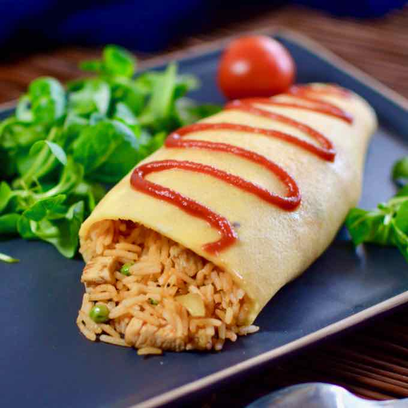

*Sopa miso --- $25.00
(Sopa con verduras)
*Caldo de pollo --- $30.00
(Con una pieza de pollo y verduras)
*Sopa Tonjiru --- $45.00
(Sopa similar a la de miso pero se le agrega cerdo)
*Sopa Kenchinjiru --- $45.00
(Sopa de verduras, algas y tofu)
*Sopa Kimchi nabe --- $45.00
(Sopa con kimchi, tofu y cerdo)
*Sopa de fideos --- $35.00
(Caldo de pollo con fideos de harina)
*Rollitos primavera --- $35.00
(Rollos rellenos de verduras y carne, 2 piezas)
*Karaage --- $45.00
(Pollo o camaron marinado y frito, 2 piezas)
*Sopa de crema --- $35.00
(Puede ser de Elote, Calabaza o Champiñones)
*Gyozas --- $50.00
(Empanadas de carne con verduras, 5 piezas)

Desayunos:
*tamago kake gohan --- $40.00
(Arroz cocido con un huevo crudo que se revuelve)
*gohan --- $30.00
(Arroz cocido)
*Tamago Onsen --- $30.00
(Huevo hervido al que se le puede agregar nori (algas secas))
*Omurice --- $40.00
(Omelette de arroz estilo japones)
*Oyakodon --- $50.00
(Tazon de pollo y huevo estilo japones)
*Tamagoyaki --- $35.00
(Rollo de huevo)
*Sandwich --- $30.00
(Puede ser de Jamon, Atun, Huevo, etc.)
*Hot Cakes --- $40.00
(Orden de 3 piezas)
*Coctel de frutas --- $25.00
(Frutas a elegir)
*Cereal --- $25.00
(Cereal a elegir)
*Todas los desayunos incluyen verduras o frutas.
Comidas:
*Tepanyaki --- $120.00
(Verduras a la plancha con carne, pollo o mariscos)
*Udon --- $120.00
(Fideos gruesos de harina en caldo de pescado y soya)
*Udon especial --- $160.00
(Fideos gruesos de harina en caldo especial con verduras.)
*Ramen --- $120.00
(Fideos delgados de harina con caldo, verduras y una porcion de cerdo, pollo o camaron)
*Ramen especial --- $160.00
(Fideos delgados de harina con caldo especial, verduras y una porcion de cerdo, pollo o camaron)
*Onigiri --- $50.00
(Bola de arroz rellena con verduras, pollo, res o camaron)
*Okonomiyaki --- $50.00
(Torilla de harina la cual se le agrega, huevo, verduras, algas, mariscos)
*Takoyaki --- $50.00
(Bolas de masa con pulpo de relleno)
*Yakitori --- $45.00
(Brochetas de carne con verduras cocinadas con salsa teriyaki)
*Carne Kobe --- $855.00
(100 gr. de Carne de primera calidad traida desde la ciudad de Kobe, Japon)
Cenas:
*Sashimi --- $100.00
(Marisco fresco, preparado de manera especial)
*Tempura --- $80.00
(Carne, pollo, mariscos o verduras capeadas de harina tempura)
*Sushi normal --- $80.00
(Rollo de arroz con verdura y surimi)
*Sushi especial --- $120.00
(Rollo de arroz con verdura y camaron)
*Sushi vegetariano --- $80.00
(Rollo de arroz solo con verduras)
*Curry --- $100.00
(Arroz con verduras y pollo o cerdo bañado con salsa teriyaki)
*Yakimeshi --- $120.00
(Arroz frito con verduras, pollo y ajonjoli)
*Salmon especial --- $150.00
(Salmon cocinado con salsa teriyaki y verduras a la plancha)
*Yakisoba --- $100.00
(fideos fritos junto con verduras y salsa teriyaki)
*Yakiniku --- $150.00
(Carne asada estilo japones)
Postres:
*Helado frito --- $60.00
(Sabor Vainilla, chocolate o napolitano)
*Cono de Nieve --- $20.00
(Sabor Vainilla,chocolate o napolitano)
*Pastel de chocolate --- $40.00
(Una Rebanada)
*Flan --- $25.00
(pieza de 250gr.)
*Pie de Manzana --- $35.00
(Una rebanada)
*Pie de Nuez --- $45.00
(Una rebanada)
*Galleta de chispas de chocolate --- $15.00
(Una pieza de 80gr.)
*Paleta Helada Magnum de Almendras --- $35.00
(Paleta de 90 gr)
*Sandwich de Nieve --- $25.00
(De 60 gr)
*Pan de elote --- $30.00
(de 90 gr.)